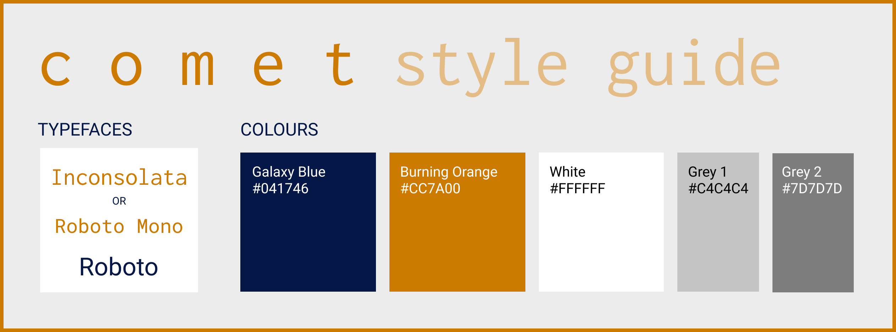

TLEF-AI and COMET Style Guide
In order to maintain a consistent format and structure across authors and courses, we ask that all contributors adhere to the following style guide, unless there is a compelling reason not to do so.
1 Look and Feel

2 Directory Structure
It is very important that you use a consistent directory structure and naming convention for each module and its associated files, especially when uploading to the Git repository. Your repo should look like:
> main_repo
|- level (directory)
|- datasets_level
|- level_title_of_notebook
|- level_title_of_notebook.qmd
|- level_title_of_notebook_tests.r
|- level_title_of_notebook_functions.r
|- ...
|- .gitignore (if not at higher level)It is also important that you keep file names consistent across modules—lowercase titles with spaces represented by underscores. Ensure that the calls to datasets and test files follow the proper paths within the notebooks.
- You should also ensure that
.ipynb checkpointsand other ancillary files are not synched to the main repo. These commits will be rejected or only adopted piecemeal. - Bespoke (i.e. only used in one module) data should be stored in a
datafolder. If it’s used more than once, add it to the main datasets folder- Try to avoid this without a good reason; instead, parse existing data or generate it using a helper function from the
testslibrary for the module.
- Try to avoid this without a good reason; instead, parse existing data or generate it using a helper function from the
3 Notebook Template
You can use the following template as a reference point for the layout of a well-structured notebook. Do not edit this template without checking first! All notebooks must include:
- A title, potentially including the course and module number
- A list of authors
- Date of last update
- A list of learning objectives
- A references section
Items such as learning objectives, prerequisites and outcomes may be included within the outline section. References may be included in the outline or towards the end of the notebook subject to author’s discretion.
3.1 Title Format
3.1.1 COMET Title Formats
Titles should look like this: X.X.X - Level - Notebook Title (applicable course code)
The number at the front of the notebook depends on the course level and follows this hierarchy: - 0.X.X for Getting Started - 1.X.X for Beginner - 2.X.X for Intermediate - 3.X.X for Advanced
Example: 2.2 - Intermediate - Multiple Regression
If you are adding a new notebook make sure to adjust the numbers of the other notebooks to follow the decided upon progression. If replacing a notebook, ensure the number matches what is being replaced. The third number in the system is meant for notebooks that cover the same topic (ex: 1.5.1 - Beginner - Introduction to Data Visualization I and 1.5.2 - Beginner - Introduction to Data Visualization II).
Note: Projects do not get an identifying code at the front and start with the level, Projects.
Note: The applicable course code is only for notebooks with the same/similar titles, often from different courses and can therefore be identified by the course code.
3.2 Headers for .qmd notebooks
The top-section for all .qmd notebooks should be as follows:
---
title: "X.X.X - Level - Notebook Title"
author: Team Name <br> _Names_
date: YYYY-MM-DD
version: XX.XX
description: A short 1 paragraph intro to the unit.
categories: [tags, with, commas]
format:
html: default
ipynb:
jupyter:
kernelspec:
display_name: R
language: r
name: ir
---The kernelspec in the last part should agree with the intended kernel for the Jupyter notebooks
3.4 Headers for .ipynb notebooks
The top-section for all .ipynb notebooks should be as follows:
# Title of Notebook
* **Authors**: Team Name (List of authors (no emails))
* **Last Update**: Date
## Outline
...4 General Notebook Formatting
Notebooks are written using the Markdown language, which supports a wide variety of text, including arbitrary HTML. To ensure as much backwards compatibility as possible, avoid using HTML elements whenever possible; use Markdown instead.
You can find a list of the different possible commands for Markdown here:
- The basic syntax which is completely supported by Jupyter.
- The extended syntax for
.qmdnotebooks only. - The cheat sheet is a good reference point
You should familiarize yourself with these, and the best practices outlined on these pages.
4.1 Formatting Guidelines
- Use only one top-level heading (
#); all other headings must be (##) or below.- Sequential increase in heading levels is encouraged but not essential.
- Never use transitions (
---or\__\_) - When referring to variables or code elements, use
typewriter font - When introducing a new definition or object use bold which should be declared using two asterisks
- When referring to packages, models, or frameworks, using italics which should be declared using underscores.
- You can use italics for emphasis, but only when necessary. Be sparing.
- We never use bold for emphasis. For critically important information, use bold italics which should be declared using three asterisks.
- Use blockquotes (
>) when using asides, comments, notes, or parenthetical remarks. - Use spaces, not tabs, to indent; 4 spaces = 1 tab
- All links must have descriptive link text:
- Good: find it on UBC’s Canvas Homepage
- Bad: find it here
- Links should also not include spaces in the URL (use
%20instead of a space) - When using display mode math
$$, place these marks on separate lines and code on its own line within. i.e. don’t do$$ x $$, do
$$
x
$$- Make sure bulleted lists have a blank line before and after them:
Some text here:
* A list item
* Another one
Some more text4.1.1 Vernacular
- Text should make use of the friendly and collegial “we”/“let’s”/“us” as the base case when describing a concept or process in a notebook. Here are some examples:
- “It can be helpful for us to understand this concept as it relates to …”
- “Let’s load the appropriate packages in now”
- “Right now, we can’t tell how accurate our model is”
- “You” or “your” should be used when making an explicit directive to the learner. Here are some examples:
- “Now it’s your turn to fill in the blank code below to see how this function works”
- “You can check out this helpful resource (link) if you’re interested in learning more about this topic”
4.1.2 Images
Images are a high-risk, high-reward inclusion.
- All images must include alt text for accessibility
- Alt text should be concise, descriptive, and specific, following best practices. A common rule-of-thumb is that it should be roughly how you would describe the image over the phone on a collect call.
- You can find some examples on PSU’s Accessibility Website
- Try to use vector-based images, when possible. In order of preference:
- Vector images (e.g.
.svg) - PNG format
- JPG format
- Vector images (e.g.
- In general, choose the lowest compression possible, and highest resolution, up to a reasonable file size.
- Make sure images meet copyright requirements and retain original sources as a reference or caption.
- Avoid transparent backgrounds when possible; they render unexpectedly on different systems
- Avoid spaces in file names
- Images should always be collected in a module specific images folder; pay close attention to the directory pathway used.
4.1.3 Lists
When rendering lists, pay close attention to indentation.
- When using an unordered list, use different list element identifiers for different levels. For example, use
-for level 1, and+for level 2. - When using an ordered list, keep the list element indices in order (e.g. 1., 2., 3. not 1., 1., 1.) even though they may render the same.
- Remember the 4 spaces rule for indentation
4.1.4 References
You can use references in Markdown. These should be used sparely; we prefer parenthetical remarks.
- Ensure that it is obvious where the reference will take you; they will render as URLs.
4.1.5 The Forbidden Zone
- Do not use
)as a delimiter. - Do not use
<and>to create links. - Do not use spaces in image, link, or other names
- Do not use
---(horizontal rule) in the text; it will render in the.ipynbformat, but it breaks the formatting of other output tools.
5 R Code Formatting
The most important rule of all coding in this project is to make it easy to understand.
5.1 Self Tests
Notebooks should generally include self-testing elements, when possible. You can find information in our guide for writing self tests.
5.2 Packages
We try to use as few packages as possible.
- If you need a new package added, create an issue and tag a maintainer
- If you only need certain functionality, see if you can include (MIT licensed) code excerpts instead; be careful about licensing, though.
5.4 R Code: Assignment, Functions, and Operators
We organize assignment operators based on role; this is not purely stylistic but should not be an issue:
- We use
<-in code blocks - We use
=inside functions
Example:
output_1 <- my_function(variables, color = red)When we use options in functions, we always try to expand and align them for readability.
Example:
bad_example <- my_function(variable_1, option_1 = red, option_2 = max(1,2), option_3 = "blue")
#don't do this
good_example <- myfunction(variable_1,
option_1 = red,
option_2 = max(1,2),
option_3 = "blue"
)We also try to explicitly name options, even when they can be passed by order, except when using pipes (%>%)
5.5 Variable and Function Naming
- We always use
snake_casefor variable names, functions, etc. - We try to use variable names which are no longer than three words, and are descriptive of the object in question
- We prefer to use more variables than fewer; description is better than parsimony
- However, we try to use no more than necessary
Example:
# A Good Example
a_variable <- 1
another_variable <- 1
one_plus_one <- a_variable + another_variable
print(one_plus_one)
# A Bad Example
# same output but hard to read
x <- 1
x <- x + x
print(x)5.6 R: Piping
Using pipes (%>%) is controversial in R programming. We recommend using pipes when using tidyverse packages. Otherwise, we try to avoid them since they don’t always work. A general rule of thumb is that pipes should be used if (and only if) they improve code readability.
6 Math Style Guide
Jupyter uses MathJax to render math equations. This means that if you know how to write in LaTeX, you know how to write in Jupyter. It’s fairly straightforward.
- This guide provides a simple introduction to how math can be used
- You can find the list of supported commands (and symbol)
Important: when using display math mode ($$) make sure that you “fence” the math. For example:
- Bad: \[x = 1\]
- Good:
$$
x = 1
$$Basically, just make sure that you have the $$ on separate lines from the equations. This causes errors when compiling to the website (since it can’t tell that you want display mode and not a nest inline math mode).
6.1 Conventions
Our formatting is still evolving, but we try to stick to the following conventions
- \(i\) is reserved for observations \(i = 1,2,3...,N\), while \(t\) is reserved for time \(t=1,2,...T\)
- \(k\) is reserved for variable counters \(k=1,2,3...K\), while \(j\) is another counter (e.g. panel, group, etc.)
- \(y\) is a dependent/outcome variable, \(x\) are explanatory variables, \(\\epsilon\) is a population residual
- We try to use Greek letters like \(\\alpha, \\beta\) to represent (population) parameters
- Estimates are hatted (\(\\hat{\\beta}\)) versions of these parameters
- We reserve \(\\beta\) for coefficients, \(\\mu\) for means, \(\\sigma\) for standard deviations, and \(\\rho\) correlations
- The variable \(D\) is reserved for causal models, and \(Z\) is for instruments
- We try to use capital letters for random variables (e.g. \(X\)) and lower-case for values (e.g. \(X = x\))
- Operators like expectation, variance, and covariance are capitalized \(E,Var,Cov\) and use square brackets (not parentheses). We sometimes subscript them with the variables being operated on (e.g. \(E_X\[X|Y=y\]\))
- Good: \(E\[X\]^2\)
- Bad: \(E(X)^2\)
- Worse: \(EX^2\)
- Probability is denoted \(P\) and is also subscripted when ambiguous
- Try to use \(f\) and \(F\) as PDF and CDFs, respectively
- The normal distribution is \(N(\\mu,\\sigma)\) and its PDF/CDF are \(\\phi,\\Phi\) respectively. Other distributions are short abbreviations with paramaters.
- e.g. \(Unif(a,b)\)
- We use blackboard-bold (e.g.
\\mathbb{R}) for the classical fields (e.g. reals) - Matrices are always capital letters, and bolded when possible.
- Vectors are always lower-case letters, and have a vector arrow (e.g. \(\\vec{a}\))
7 Non-Notebook Formatting
If you happen to be writing something that is not a notebook, you can use MyST Markdown in addition.
- This gives you a bunch of special formatting options and compile-time inserts
- It also is much more supportive of HTML than regular Notebooks
5.3 Comments
Use comments frequently, especially the first time something is used.